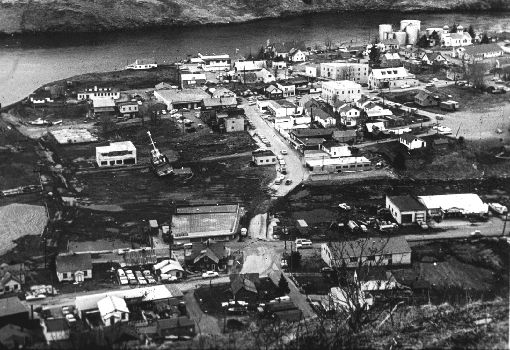
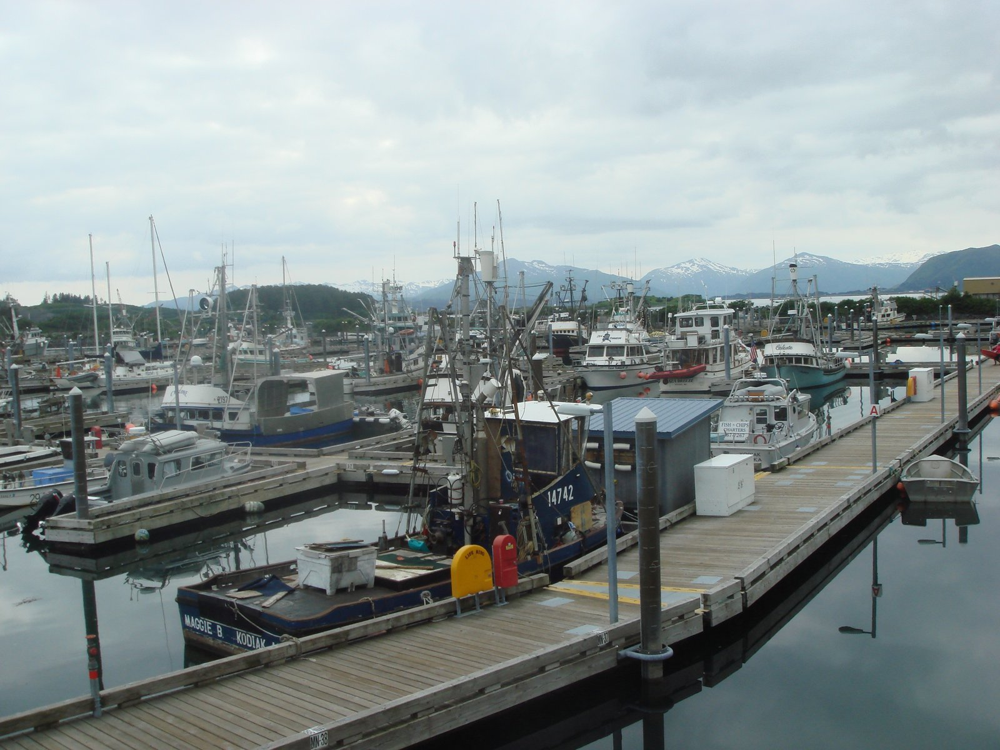

Directory / Kodiak, AK
Kodiak tides
High and low tides for the coming week from NOAA station 9457261 (57.7833, -152.428) — Port of Kodiak. Times are local (LST/LDT). Heights are feet above Mean Lower Low Water (MLLW). St. Paul Harbor (downtown) and St. Herman Harbor (Near Island) serve this fishing hub on the Gulf of Alaska / Shelikof Strait.
Harbor then & now
Historic

Current

Official NOAA predictions Station home View on Windy
Port Sponsor — Kodiak, AK
Top placement for fuel docks, marinas, yards, and marine businesses.
$25–$50 / month
Wednesday, November 11, 2026
| Tide | Time (local) | Height (MLLW) |
|---|---|---|
| High | 3:06 AM | 7.3 ft |
| Low | 8:12 AM | 3.2 ft |
| High | 2:14 PM | 9.7 ft |
| Low | 9:08 PM | -0.4 ft |
Thursday, November 12, 2026
| Tide | Time (local) | Height (MLLW) |
|---|---|---|
| High | 3:44 AM | 7.1 ft |
| Low | 8:45 AM | 3.5 ft |
| High | 2:47 PM | 9.4 ft |
| Low | 9:45 PM | 0.0 ft |
Friday, November 13, 2026
| Tide | Time (local) | Height (MLLW) |
|---|---|---|
| High | 4:23 AM | 6.7 ft |
| Low | 9:21 AM | 3.8 ft |
| High | 3:23 PM | 8.9 ft |
| Low | 10:24 PM | 0.4 ft |
Saturday, November 14, 2026
| Tide | Time (local) | Height (MLLW) |
|---|---|---|
| High | 5:07 AM | 6.4 ft |
| Low | 10:00 AM | 4.0 ft |
| High | 4:02 PM | 8.4 ft |
| Low | 11:07 PM | 0.9 ft |
Sunday, November 15, 2026
| Tide | Time (local) | Height (MLLW) |
|---|---|---|
| High | 5:57 AM | 6.2 ft |
| Low | 10:49 AM | 4.2 ft |
| High | 4:48 PM | 7.7 ft |
| Low | 11:55 PM | 1.2 ft |
Monday, November 16, 2026
| Tide | Time (local) | Height (MLLW) |
|---|---|---|
| High | 6:53 AM | 6.1 ft |
| Low | 11:52 AM | 4.3 ft |
| High | 5:44 PM | 7.1 ft |
Tuesday, November 17, 2026
| Tide | Time (local) | Height (MLLW) |
|---|---|---|
| Low | 12:49 AM | 1.5 ft |
| High | 7:54 AM | 6.3 ft |
| Low | 1:14 PM | 4.1 ft |
| High | 6:56 PM | 6.5 ft |
Wednesday, November 18, 2026
| Tide | Time (local) | Height (MLLW) |
|---|---|---|
| Low | 1:47 AM | 1.8 ft |
| High | 8:47 AM | 6.7 ft |
| Low | 2:42 PM | 3.5 ft |
| High | 8:21 PM | 6.2 ft |
Marine weather & cameras
NWS marine forecast — Shelikof Strait (PKZ738)
Issued 349 PM AKST Tue Nov 10 2026. Snapshot fetched 2026-11-10 21:11 AKST from NWS text product. Official zone forecast · Raw text
...SMALL CRAFT ADVISORY THROUGH WEDNESDAY...
- .TONIGHT...NW wind 30 kt. Seas 6 ft.
- .WED...W wind 25 kt. Seas 5 ft.
- .WED NIGHT...W wind 20 kt. Seas 3 ft.
- .THU AND THU NIGHT...NW wind 20 kt. Seas 4 ft.
- .FRI THROUGH SAT...NW wind 30 kt. Seas 7 ft.
- .SUN...W wind 20 kt. Seas 3 ft.
Nearby NDBC observation — Kodiak Gull Island (KGXA2, Marine Exchange of Alaska)
wind 360°, 15 kt, gust 26 kt, air 39°F
Observation time 2026-11-10 21:02 AKST (converted to AKST). Attribution: NOAA NDBC station KGXA2. Snapshot fetched 2026-11-10 21:11 AKST.
Nearby NDBC observation — Kodiak Island (KDAA2 / CO-OPS 9457292)
Live values not cached on this page (realtime file unavailable at fetch 2026-11-10 21:11 AKST). Check the station page for current wind/seas: NOAA NDBC KDAA2. Also NDBC home.
Harbor webcams
- Koniag — Kodiak webcam (free public; downtown waterfront / Near Island Channel view; updates ~60s; we link only, do not rehost)
- FAA WeatherCams — Kodiak Airport (PADQ) (free public link; not embedded)
- FAA WeatherCams — Kodiak camera site summary
No dedicated City St. Paul / St. Herman harbor webcam verified free/public this pass. Aggregator mirrors skipped in favor of primary Koniag + FAA sources.
Local marine & shore directory
Verified public listings only. List free · Get featured
Marine services
Moorage & marinas
Fuel docks
Shipyards & haul-outs
Boat repair & mechanics
Marine suppliers & chandleries
Electronics sales & installation
No verified listing yet — list your business free.
Welding & fabrication
Canvas & upholstery
No verified listing yet — list your business free.
Surveyors
No verified listing yet — list your business free.
Towing & salvage
No verified listing yet — list your business free.
Ice & bait
No verified listing yet — list your business free.
Fishing charters
No verified listing yet — list your business free.
Ashore for boaters
Groceries & provisioning
Hardware
No verified listing yet — list your business free.
Liquor stores
No verified listing yet — list your business free.
Laundromats
No verified listing yet — list your business free.
Showers
No verified listing yet — list your business free.
Lodging
No verified listing yet — list your business free.
Restaurants
No verified listing yet — list your business free.
Medical clinics
Pharmacies
Post office & shipping
Airport & floatplane
Propane
No verified listing yet — list your business free.
Auto & truck rental
No verified listing yet — list your business free.
Local news — Kodiak, AK
Plain links to local outlets. Always check the source for the latest. Local news partners welcome.
Free weekly tides & marine weather
Get a short email for your port. We do not sell your email. Privacy.
Mailing list powered by Buttondown.
Boating gear on Amazon
As an Amazon Associate I earn from qualifying purchases.
Helpful search links for common gear. Prices and availability are on Amazon.
Other Alaska ports
All Pacific Tides ports · Harbor, fuel & haul-out directory · Printable Kodiak tide calendar
Sources
- NOAA CO-OPS station 9457261 — Port of Kodiak (meta name PORT OF KODIAK; lat 57.7833, lng -152.428)
- Nearby currents reference: KOD0903 Kodiak Harbor Narrows (ports.csv; not plotted on this page)
- Predictions API:
api.tidesandcurrents.noaa.gov/api/prod/datagetter - Tide predictions fetched via generate_tide_page.py for station 9457261, 2026-11-06 through 2026-11-13 (31 hi/lo values). Page assembled 2026-11-06 08:47 America/Sitka.
- NWS coastal waters PKZ738 Shelikof Strait text product (snapshot above).
- Directory rows: OWN / OFFICIAL sources listed in businesses-kodiak.csv (verified 2026-11-06).